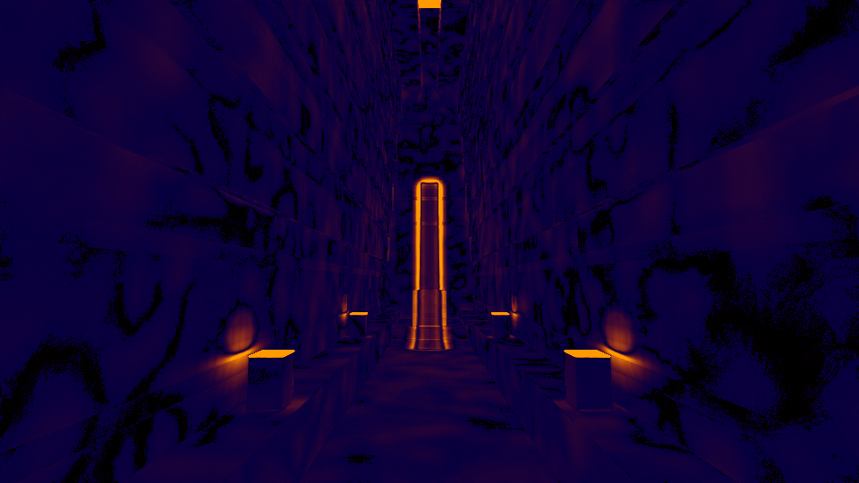
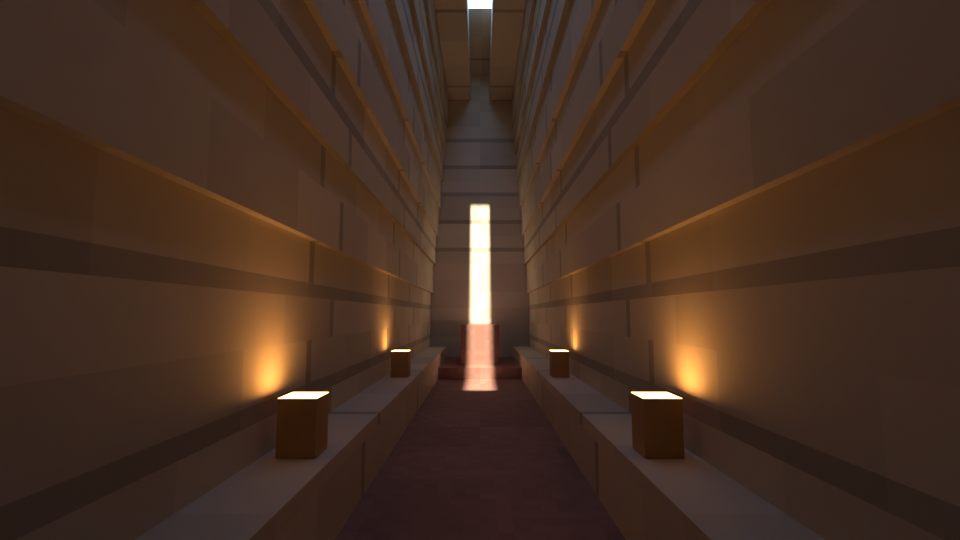
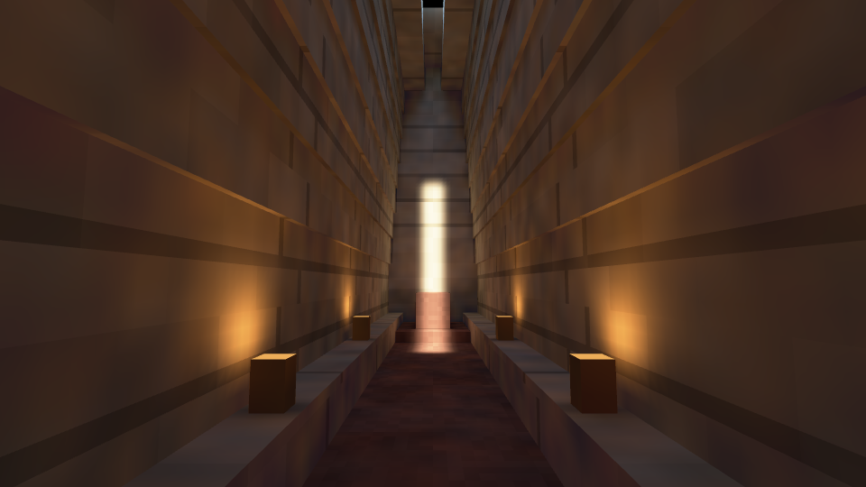

An original corbelled stone gallery, lit once in Blender Cycles: a blade of sun through a roof slot, four ember braziers and bounce light off the stone. That light is baked into the X3D file, one colour per face corner, so the browser only draws it. Drag the gold line. The left side is Blender's path-traced frame and the right side is the live scene, from the same camera.


scores: receipts/scores.json
Everything is generated by one script; a fix goes into the script and the files are rebuilt. Each box names the tool that ran.
Captured by the build, not by your browser: headless Chromium, software GL (SwiftShader, no GPU), 960×540.

| What | Value | Source |
|---|
| Finding | Grade | What we did |
|---|---|---|
| A vertex-colour bake gathers light only on the side the face normal points to. Patches built facing out picked up the outside sun, so ledges and roof glowed white while the path-traced frame was dark. | Confirmed | The generator now turns every face into the room (and box faces away from the box). Frames before and after are in the build log. |
| One sample point per corner means a bake at 64 samples looked like crushed glitter in both engines, though the path-traced frame (denoised) was smooth. | Confirmed | 384 samples, plus a 3-pass smoothing that averages corners sharing a vertex and a facing, so light never leaks from wall to floor. Shadow edges soften by about two cells (26 cm). |
| The recipe's exposure rule (70th-percentile floor corner = 1.0) assumes a room lit mostly by daylight. In a slot-lit room most corners are in shadow, so it blew the frame out. | Confirmed | The script exposes on the 99.5th percentile instead (inside the sun blade), and says so in bake-stats.json. |
| X_ITE and Babylon draw the same baked colours: their frames differ from each other by far less than either differs from Cycles. | Confirmed | See scores.json. The gap to Cycles is the bake itself (per-corner resolution, smoothing, the shoulder), not the engines. |
| The exported camera's rotation axis has length 1.000046 instead of 1 (rounding in the exporter). | Confirmed | Harmless here (both browsers renormalise); logged for the add-on. |
| Check | Tool | Result |
|---|
Not tested: a real GPU, phones (the page works at phone width, but no phone frame rate was measured), Castle or X3DOM. Software-GL frame rates are not quoted.